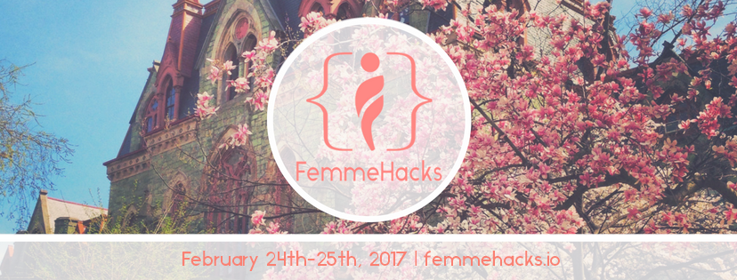
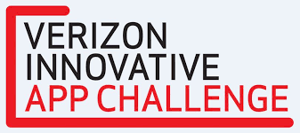

Experiences
Home Page About Us Experiences Blog
Girls Science Interactive
Girls Science Interactive (GSI) is an organization that provides free STEM summer camps for elementary and middle school girls to spark their interest in science. So far, we have hosted 20 free STEM summer camps and after school programs in Florida, Kentucky, Louisiana, New Jersey, New York, and Pennsylvania.
You can visit our website here. And check out our Facebook page.
Femmehacks 2017


FemmeHacks is a beginner-friendly, student hackathon for female-identifying and non-binary individuals in the Philly/NY/NJ area, hosted by the University of Pennsylvania's Women in Computer Science. AJ, Nethmin, and Juliana developed this website while they were at Femmehacks 2017. They had the opportunity to attend and expand their knowledge in coding and html.
Verizon Innovative App Challenge
The Verizon Innovative App Challenge is a challenge for students in the USA that are in Middle School or High School, in which a team of 5-7 students brainstorm, design, pitch, and possibly build an app. Nethmin was a part of the Marion Junior High School 2014-15 team during her 7th grade year. Although her team didn’t win, and therefore, didn’t get to build their app, they learned a lot about mobile applications, marketing, and video production through their participation in this challenge.
Hour of Code
The Hour of Code started as a one-hour introduction to computer science, designed to demystify "code", to show that anybody can learn the basics, and to broaden participation in the field of computer science. It has since become a worldwide effort to celebrate computer science, starting with 1-hour coding activities but expanding to all sorts of community efforts.